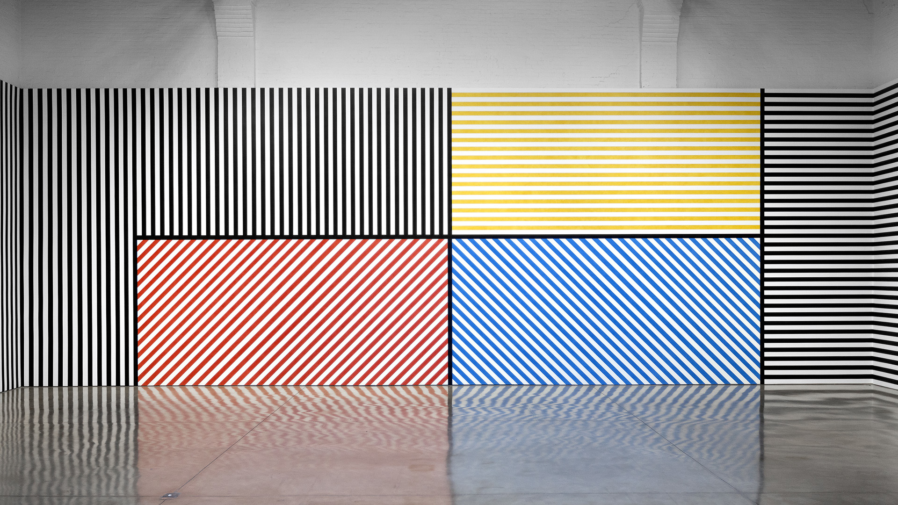

Sol LeWitt
The Artist
Sol LeWitt was an American artist often associated with the Conceptual and Minimalist movements. A tool used by Conceptual artists is instruction-based art. LeWitt would create a set of isntructions for a line-based drawing, and then let others create the art by following his instructions. Sol once said, "The idea becomes a machine that makes the art."

The image above was created with help of LeWitt's instructions:
USING A BLACK, HARD CRAYON DRAW A TWENTY INCH SQUARE.
DIVIDE THIS SQUARE INTO ONE INCH SQUARES. WITHIN EACH
ONE INCH SQUARE, DRAW NOTHING, OR DRAW A DIAGONAL
STRAIGHT LINE FROM CORNER TO CORNER OR TWO CROSSING
STRAIGHT LINES DIAGONALLY FROM CORNER TO CORNER.
Recreating LeWitt
Using lines, circles, and rectangles, you are going to create a set of instructions to create art.
Coding LeWitt
LeWitt's instructions are nothing more than an algorithm. You are going to take your art instructions and turn them into a computer algorithm that creates art with JavaScript.
Setup
Go to the P5 Web Editor and click "Log in" in the top-right corner. Click on the Google logo at the bottom. Use your school email and password to log in.
P5 Fundamentals
Your typical P5 program has two functions, "setup" and "draw". The setup function runs only one time. You should use this function for things that will remain the same throughout your program (like your canvas size). The draw function is an infinite loop.
Your program will run to the end, then go back to the top and start again. It will only stop running if you press the stop button. Most of the code you write will go in the draw function.
The Canvas
The canvas is the area on which you draw with code. The canvas is declared in the setup function. The command is createCanvas(400, 400);. The two numbers represent the width and the height of the canvas.
Positions on the canvas are done using a grid system. Each point is composed of two numbers, an x-coordinate (horizontal position) and a y-coordinate (vertical position). Unlike coordinate systems you see in your math class, the origin point (0, 0) is in the top-left corner. As you move down the canvas, the y-value gets bigger. As you move to the right, the x-value gets bigger.

Lines
To draw a line, use the command line(20, 20, 50, 50);. This command requres four numbers. The first two numbers are the x- and y-values for the first point. The other two numbers are the x- and y-values for the second point. The computer will draw a line between the two points.
To change the thickness of a line, you need to use the the strokeWeight(5); command. This will set the thickness to five pixels. strokeWeight should come before the line command.
Ellipses
Use the ellipse command when drawing circles or ovals. The command to do this is ellipse(10, 50, 20, 20);. This will create a circle at the location (10, 50) with a width of 20 and a height of 20. It is the last two numbers that make the shape a circle. If you have the code ellipse(10, 50, 30, 40); then this would make an oval because the width is 30 and the height is 40.
Rectangles
Similar to the ellipse the command, the rectangle command can draw either a rectangle or a square. The command would look like rect(60, 60, 100, 100);. This will create a square at location (60, 60) with a width of 100 and a height of 100. Change the last two numbers if you want a rectangle.